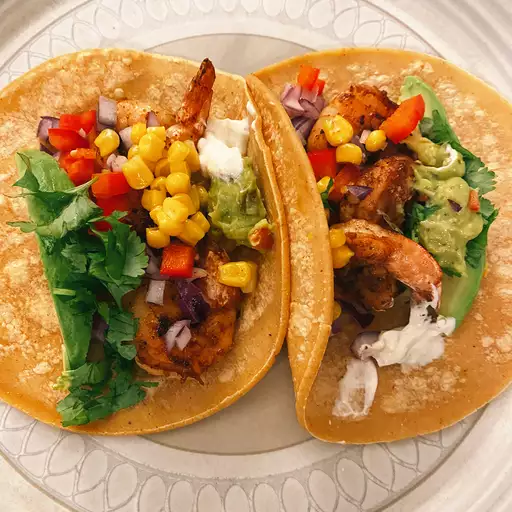
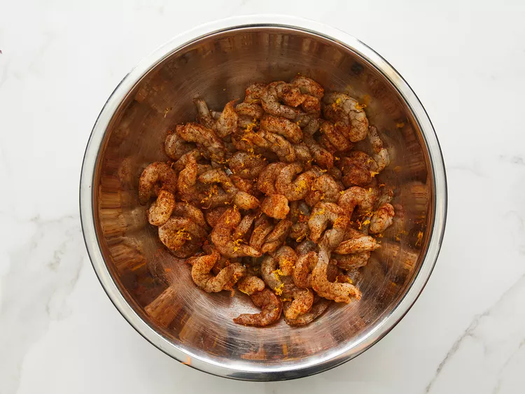
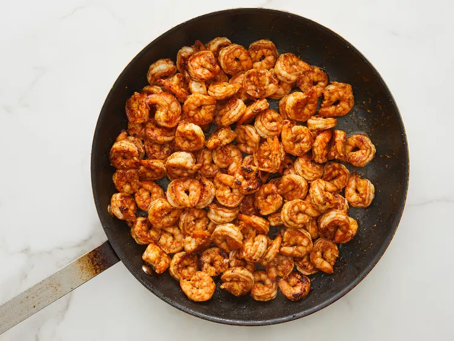
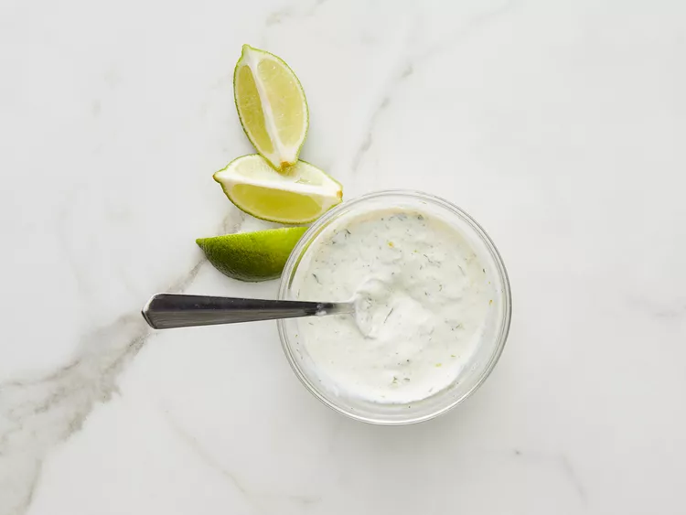
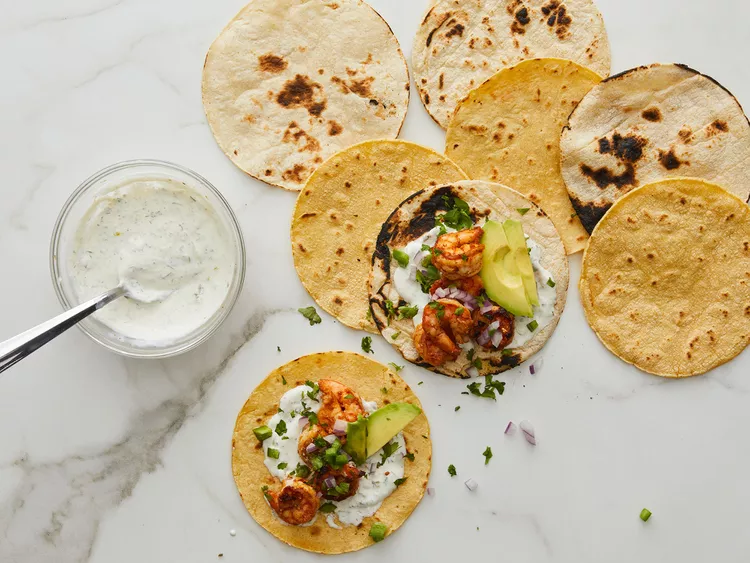

Shrimp Tacos with Cilantro-Lime Crema
This sensational shrimp taco recipe with scpicy seasoned shrimp, zesty lime crema, avocado, and cilantro is easy to make and so delicius, Everyone these tacos when i make them
Ingredients
- 2 pounds large frozen peeled and deveined shrimp, thawed
- 1 1/2 teaspoons chili powder
- 1 teaspoon paprika
- 1/2 teaspoon paprika
- 1/2 teaspoon ground cumin
- 1/2 teaspoon onion powder
- 1/2 teaspoon salt
- 1/2 teaspoon ground black pepper
- 1/4 teaspoon ground coriander
- 1/4 teaspoon grated Valencia orange zest
- 2 tablespoon olive oil, or more as needed
- 2 tablespoon sour cream
- 1 lime, zested and juice
- 1 teaspoon chopped fresh cilantro
- 1/4 teaspoon garlic powder
- 1 pinch salt and ground black pepper
- 20 (6 inch) corn tortillas
- 2 avocados, thinly sliced, or to taste
- 1 red onion, finely diced, or to taste
- 1/2 bunch fresh cilantro, chopped, or to taste
- 1 jalapeno pepper, diced, or to taste
- 2 limes, cut into wedges, or as needed
Directions
Step 1
- Rinse defrosted shrimp under cold water, drain, and pat dry
Step 2
- Combine shrimp, chili powder, garlic, paprika, cumin, onion powder, 1/2 teaspoon salt, 1/2 teaspoon black pepper, coriander, and orange zest in a bowl. Mix well

Step 3
- Heat olive oil in nonstick frying pan over medium-high heat. Add shrimp and cook until bright pink on the outside and the meatis opaque, 4 to 5 minutes on each side, depending on the size of the shrimp

Step 4
- While shrimp cooks, prepare creama by whisking together sour cream, zest and juice of 1 lime, 1 teaspoonn cilantro, garlic powder, and 1 pinch each of salt and black pepper

Step 5
- Heat ccorn tortillas in either a pan on a griddle over low heat, 1to 2 minutes per side. Be careful not to let them burn. Set aside.
Step 6
- Assemble tacos by spreading 1 teaspoon creama accros each tortilla, adding 3 or 4 shrimp, 2 slices of avocado, a sprinke of fresh red onion, cilentro, and jalapeno, Serve with sliced limes to squeeze on top and extra crema on the side.
